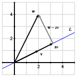
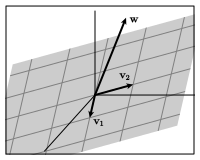

Section 6.3 Orthogonal bases and projections
We know that a linear system \(A\xvec=\bvec\) is inconsistent when \(\bvec\) is not in \(\col(A)\text{,}\) the column space of \(A\text{.}\) In Section 6.5, we'll develop a strategy for dealing with inconsistent systems by finding \(\bhat\text{,}\) the vector in \(\col(A)\) that is closest to \(\bvec\text{.}\) The equation \(A\xvec=\bhat\) is then consistent and its solution set can provide us with useful information about the original system.
In this section and the next, we'll develop some techniques that enable us to find \(\bhat\text{,}\) the vector in a given subspace \(W\) that is closest to a given vector \(\bvec\text{.}\)
Preview Activity 6.3.1.
For this activity, it will be helpful to recall the distributive property of dot products:
We'll work with the basis of \(\real^2\) formed by the vectors
Verify that the vectors \(\wvec_1\) and \(\wvec_2\) are orthogonal.
Suppose that \(\bvec =\twovec74\) and find the dot products \(\wvec_1\cdot\bvec\) and \(\wvec_2\cdot\bvec\text{.}\)
-
We would like to express \(\bvec\) as a linear combination of \(\wvec_1\) and \(\wvec_2\text{,}\) which means that we need to find weights \(c_1\) and \(c_2\) such that
\begin{equation*} \bvec = c_1\wvec_1 + c_2\wvec_2\text{.} \end{equation*}To find the weight \(c_1\text{,}\) dot both sides of this expression with \(\wvec_1\text{:}\)
\begin{equation*} \bvec\cdot\wvec_1 = (c_1\wvec_1 + c_2\wvec_2)\cdot\wvec_1\text{,} \end{equation*}and apply the distributive property.
In a similar fashion, find the weight \(c_2\text{.}\)
Verify that \(\bvec = c_1\wvec_1+c_2\wvec_2\) using the weights you have found.
We frequently ask to write a given vector as a linear combination of given basis vectors. In the past, we have done this by solving a linear system. The preview activity illustrates how this task can be simplified when the basis vectors are orthogonal to one another. We'll explore this and other uses of orthogonal bases in this section.
Subsection 6.3.1 Orthogonal sets
The preview activity dealt with a basis of \(\real^2\) formed by two orthogonal vectors. We will more generally consider a set of orthogonal vectors, as described in the next definition.
Definition 6.3.1.
By an orthogonal set of vectors, we mean a set of nonzero vectors each of which is orthogonal to the others.
Example 6.3.2.
The 3-dimensional vectors
form an orthogonal set, which can be verified by computing
Notice that this set of vectors forms a basis for \(\real^3\text{.}\)
Example 6.3.3.
The vectors
form an orthogonal set of 4-dimensional vectors. Since there are only three vectors, this set does not form a basis for \(\real^4\text{.}\) It does, however, form a basis for a 3-dimensional subspace \(W\) of \(\real^4\text{.}\)
Suppose that a vector \(\bvec\) is a linear combination of an orthogonal set of vectors \(\wvec_1,\wvec_2,\ldots,\wvec_n\text{;}\) that is, suppose that
Just as in the preview activity, we can find the weight \(c_1\) by dotting both sides with \(\wvec_1\) and applying the distributive property of dot products:
Notice how the presence of an orthogonal set causes most of the terms in the sum to vanish. In the same way, we find that
so that
We'll record this fact in the following proposition.
Proposition 6.3.4.
If a vector \(\bvec\) is a linear combination of an orthogonal set of vectors \(\wvec_1,\wvec_2,\ldots,\wvec_n\text{,}\) then
Using this proposition, we can see that an orthogonal set of vectors must be linearly independent. Suppose, for instance, that \(\wvec_1,\wvec_2,\ldots,\wvec_n\) is a set of nonzero orthogonal vectors and that one of the vectors is a linear combination of the others, say,
We therefore know that
which cannot happen since we know that \(\wvec_3\) is nonzero. This tells us that
Proposition 6.3.5.
An orthogonal set of vectors \(\wvec_1,\wvec_2,\ldots,\wvec_n\) is linearly independent.
If the vectors in an orthogonal set have dimension \(m\text{,}\) they form a linearly independent set in \(\real^m\) and are therefore a basis for the subspace \(W=\laspan{\vvec_1,\vvec_2,\ldots,\vvec_n}\text{.}\) If there are \(m\) vectors in the orthogonal set, they form a basis for \(\real^m\text{.}\)
Activity 6.3.2.
Consider the vectors
-
Verify that this set forms an orthogonal set of \(3\)-dimensional vectors.
Explain why we now know that this set of vectors forms a basis for \(\real^3\text{.}\)
Suppose that \(\bvec=\threevec24{-4}\text{.}\) Find the weights \(c_1\text{,}\) \(c_2\text{,}\) and \(c_3\) that express \(\bvec\) as a linear combination \(\bvec=c_1\wvec_1 + c_2\wvec_2 + c_3\wvec_3\) using Proposition 6.3.4.
-
If we multiply a vector \(\vvec\) by a positive scalar \(s\text{,}\) the length of \(\vvec\) is also multiplied by \(s\text{;}\) that is, \(\len{s\vvec} = s\len{\vvec}\text{.}\)
Using this observation, find a vector \(\uvec_1\) that is parallel to \(\wvec_1\) and has length 1. Such vectors are called unit vectors.
Similarly, find a unit vector \(\uvec_2\) that is parallel to \(\wvec_2\) and a unit vector \(\uvec_3\) that is parallel to \(\wvec_3\text{.}\)
Construct the matrix \(Q=\begin{bmatrix} \uvec_1 \amp \uvec_2 \amp \uvec_3 \end{bmatrix}\) and find the product \(Q^TQ\text{.}\) Use Proposition 6.2.8 to explain your result.
This activity introduces an important way of modifying an orthogonal set so that the vectors in the set have unit length. Recall that we may multiply any nonzero vector \(\wvec\) by a scalar so that the new vector has length 1. For instance, we know that, if \(s\) is a positive scalar, then \(\len{s\wvec} = s\len{\wvec}\text{.}\) To obtain a vector \(\uvec\) having unit length, we want
so that \(s=1/\len{\wvec}\text{.}\) Therefore,
becomes a unit vector parallel to \(\wvec\text{.}\)
Orthogonal sets in which the vectors have unit length are called orthonormal and are especially convenient.
Definition 6.3.6.
An orthonormal set is an orthogonal set of vectors each of which has unit length.
Example 6.3.7.
The vectors
are an orthonormal set of vectors in \(\real^2\) and form an orthonormal basis for \(\real^2\text{.}\)
If we form the matrix
we find that \(Q^TQ = I\) since Proposition 6.2.8 tells us that
The previous activity and example illustrate the next proposition.
Proposition 6.3.8.
If the columns of the \(m\times n\) matrix \(Q\) form an orthonormal set, then \(Q^TQ = I_n\text{,}\) the \(n\times n\) identity matrix.
Subsection 6.3.2 Orthgonal projections
We now turn to an important problem that will appear in many forms in the rest of our investigations. Suppose, as shown in Figure 6.3.9, that we have a subspace \(W\) of \(\real^m\) and a vector \(\bvec\) that is not in that subspace. We would like to find the vector \(\bhat\) in \(W\) that is closest to \(\bvec\text{.}\)

To get started, let's consider a simpler problem where we have a line \(L\) in \(\real^2\text{,}\) defined by the vector \(\wvec\text{,}\) and another vector \(\bvec\) that is not on the line, as shown on the left of Figure 6.3.10. We wish to find \(\bhat\text{,}\) the vector on the line that is closest to \(\bvec\text{,}\) as illustrated in the right of Figure 6.3.10.
To find \(\bhat\text{,}\) we require that \(\bvec-\bhat\) be orthogonal to \(L\text{.}\) For instance, if \(\yvec\) is another vector on the line, as shown in Figure 6.3.11, then the Pythagorean theorem implies that
which means that \(\len{\bvec-\yvec}\geq|\bvec-\bhat|\text{.}\) Therefore, \(\bhat\) is closer to \(\bvec\) than any other vector on the line \(L\text{.}\)
Definition 6.3.12.
Given a vector \(\bvec\) in \(\real^m\) and a subspace \(W\) of \(\real^m\text{,}\) the orthogonal projection of \(\bvec\) onto \(W\) is the vector \(\bhat\) in \(W\) that is closest to \(\bvec\text{.}\) It is characterized by the property that \(\bvec-\bhat\) is orthogonal to \(W\text{.}\)
Activity 6.3.3.
This activity demonstrates how to determine the orthogonal projection of a vector onto a subspace of \(\real^m\text{.}\)
-
Let's begin by considering a line \(L\text{,}\) defined by the vector \(\wvec=\twovec21\text{,}\) and a vector \(\bvec=\twovec24\) not on \(L\text{,}\) as illustrated in Figure 6.3.13.
Figure 6.3.13. Finding the orthogonal projection of \(\bvec\) onto the line defined by \(\wvec\text{.}\) -
To find \(\bhat\text{,}\) first notice that \(\bhat = s\wvec\) for some scalar \(s\text{.}\) Since \(\bvec-\bhat = \bvec - s\wvec\) is orthogonal to \(\wvec\text{,}\) what do we know about the dot product
\begin{equation*} (\bvec-s\wvec)\cdot\wvec\text{?} \end{equation*} Apply the distributive property of dot products to find the scalar \(s\text{.}\) What is the vector \(\bhat\text{,}\) the orthogonal projection of \(\bvec\) onto \(L\text{?}\)
-
More generally, explain why the orthogonal projection of \(\bvec\) onto the line defined by \(\wvec\) is
\begin{equation*} \bhat= \frac{\bvec\cdot\wvec}{\wvec\cdot\wvec}~\wvec\text{.} \end{equation*}
-
-
The same ideas apply more generally. Suppose we have an orthogonal set of vectors \(\wvec_1=\threevec22{-1}\) and \(\wvec_2=\threevec102\) that define a plane \(W\) in \(\real^3\text{.}\) If \(\bvec=\threevec396\) another vector in \(\real^3\text{,}\) we seek the vector \(\bhat\) on the plane \(W\) closest to \(\bvec\text{.}\) As before, the vector \(\bvec-\bhat\) will be orthogonal to \(W\text{,}\) as illustrated in Figure 6.3.14.

Figure 6.3.14. Given a plane \(W\) defined by the orthogonal vectors \(\wvec_1\) and \(\wvec_2\) and another vector \(\bvec\text{,}\) we seek the vector \(\bhat\) on \(W\) closest to \(\bvec\text{.}\) The vector \(\bvec-\bhat\) is orthogonal to \(W\text{.}\) What does this say about the dot products: \((\bvec-\bhat)\cdot\wvec_1\) and \((\bvec-\bhat)\cdot\wvec_2\text{?}\)
-
Since \(\bhat\) is in the plane \(W\text{,}\) we can write it as a linear combination \(\bhat = c_1\wvec_1 + c_2\wvec_2\text{.}\) Then
\begin{equation*} \bvec-\bhat = \bvec - (c_1\wvec_1+c_2\wvec_2)\text{.} \end{equation*}Find the weight \(c_1\) by dotting \(\bvec-\bhat\) with \(\wvec_1\) and applying the distributive property of dot products. Similarly, find the weight \(c_2\text{.}\)
What is the vector \(\bhat\text{,}\) the orthogonal projection of \(\wvec\) onto the plane \(W\text{?}\)
-
Suppose that \(W\) is a subspace of \(\real^m\) with orthogonal basis \(\wvec_1,\wvec_2,\ldots,\wvec_n\) and that \(\bvec\) is a vector in \(\real^m\text{.}\) Explain why the orthogonal projection of \(\bvec\) onto \(W\) is the vector
\begin{equation*} \bhat = \frac{\bvec\cdot\wvec_1}{\wvec_1\cdot\wvec_1}~\wvec_1 + \frac{\bvec\cdot\wvec_2}{\wvec_2\cdot\wvec_2}~\wvec_2 + \ldots + \frac{\bvec\cdot\wvec_n}{\wvec_n\cdot\wvec_n}~\wvec_n\text{.} \end{equation*} -
Suppose that \(\uvec_1,\uvec_2,\ldots,\uvec_n\) is an orthonormal basis for \(W\text{;}\) that is, the vectors are orthogonal to one another and have unit length. Explain why the orthogonal projection is
\begin{equation*} \bhat= (\bvec\cdot\uvec_1)~\uvec_1 + (\bvec\cdot\uvec_2)~\uvec_2 + \ldots + (\bvec\cdot\uvec_n)~\uvec_n\text{.} \end{equation*} If \(Q=\begin{bmatrix} \uvec_1 \amp \uvec_2 \amp \ldots \amp \uvec_n \end{bmatrix}\) is the matrix whose columns are an orthonormal basis of \(W\text{,}\) use Proposition 6.2.8 to explain why \(\bhat = QQ^T\bvec\text{.}\)
In all the cases considered in the activity, we are looking for \(\bhat\text{,}\) the vector in a subspace \(W\) closest to a vector \(\bvec\text{,}\) which is found by requiring that \(\bvec-\bhat\) be orthogonal to \(W\text{.}\) This means that \((\bvec-\bhat)\cdot\wvec = 0\) for any vector \(\wvec\) in \(W\text{.}\)
If we have an orthogonal basis \(\wvec_1,\wvec_2,\ldots,\wvec_n\) for \(W\text{,}\) then \(\bhat = c_1\wvec_1+c_w\wvec_2+\ldots c_n\wvec_n\text{.}\) Therefore,
This leads to the projection formula:
Proposition 6.3.15. Projection formula.
If \(W\) is a subspace of \(\real^m\) having an orthogonal basis \(\wvec_1,\wvec_2,\ldots, \wvec_n\) and \(\bvec\) is a vector in \(\real^m\text{,}\) then the orthogonal projection of \(\bvec\) onto \(W\) is
Caution.
Remember that the projection formula given in Proposition 6.3.15 applies only when the basis \(\wvec_1,\wvec_2,\ldots,\wvec_n\) of \(W\) is orthogonal.
If we have an orthonormal basis \(\uvec_1,\uvec_2,\ldots,\uvec_n\) for \(W\text{,}\) the projection formula simplifies to
If we then form the matrix
this expression may be succintly written
This leads to the following proposition.
Proposition 6.3.16.
If \(\uvec_1,\uvec_2,\ldots,\uvec_n\) is an orthonormal basis for a subspace \(W\) of \(\real^m\text{,}\) then the matrix transformation that projects vectors in \(\real^m\) orthogonally onto \(W\) is represented by the matrix \(QQ^T\) where
Example 6.3.17.
In the previous activity, we looked at the plane \(W\) defined by the two orthogonal vectors
We can form an orthonormal basis by scalar multiplying these vectors to have unit length:
Using these vectors, we form the matrix
The projection onto the plane \(W\) is then given by the matrix
Let's check that this works by considering the vector \(\bvec=\threevec100\) and finding \(\bhat\text{,}\) its orthogonal projection onto the plane \(W\text{.}\) In terms of the original basis \(\wvec_1\) and \(\wvec_2\text{,}\) the projection formula from Proposition 6.3.15 tells us that
Alternatively, we use the matrix \(QQ^T\text{,}\) as in Proposition 6.3.16, to find that
Activity 6.3.4.
-
Suppose that \(L\) is the line in \(\real^3\) defined by the vector \(\wvec=\threevec{1}{2}{-2}\text{.}\)
Find an orthonormal basis \(\uvec\) for \(L\text{.}\)
Construct the matrix \(Q = \begin{bmatrix}\uvec\end{bmatrix}\) and use it to construct the matrix \(P\) that projects vectors orthogonally onto \(L\text{.}\)
Use your matrix to find \(\bhat\text{,}\) the orthogonal projection of \(\bvec=\threevec111\) onto \(L\text{.}\)
Find \(\rank(P)\) and explain its geometric significance.
-
The vectors
\begin{equation*} \wvec_1 = \fourvec1111,\hspace{24pt} \wvec_2 = \fourvec011{-2} \end{equation*}form an orthogonal basis of \(W\text{,}\) a two-dimensional subspace of \(\real^4\text{.}\)
Use the projection formula from Proposition 6.3.15 to find \(\bhat\text{,}\) the orthogonal projection of \(\bvec=\fourvec92{-2}3\) onto \(W\text{.}\)
Find an orthonormal basis \(\uvec_1\) and \(\uvec_2\) for \(W\) and use it to construct the matrix \(P\) that projects vectors orthogonally onto \(W\text{.}\) Check that \(P\bvec = \bhat\text{,}\) the orthogonal projection you found in the previous part of this activity.
Find \(\rank(P)\) and explain its geometric significance.
Find a basis for \(W^\perp\text{.}\)
-
Find a vector \(\bvec^\perp\) in \(W^\perp\) such that
\begin{equation*} \bvec = \bhat + \bvec^\perp. \end{equation*} Find the product \(Q^TQ\) and explain your result.
This activity demonstrates one issue of note. We found \(\bhat\text{,}\) the orthogonal projection of \(\bvec\) onto \(W\text{,}\) by requiring that \(\bvec-\bhat\) be orthogonal to \(W\text{.}\) In other words, \(\bvec-\bhat\) is a vector in the orthogonal complement \(W^\perp\text{,}\) which we may denote \(\bvec^\perp\text{.}\) This explains the following proposition, which is illustrated in Figure 6.3.19
Proposition 6.3.18.
If \(W\) is a subspace of \(\real^n\) with orthogonal complement \(W^\perp\text{,}\) then any \(n\)-dimensional vector \(\bvec\) can be uniquely written asLet's summarize what we've found. If \(Q\) is a matrix whose columns \(\uvec_1, \uvec_2,\ldots,\uvec_n\) form an orthonormal set in \(\real^m\text{,}\) then
\(Q^TQ = I_n\text{,}\) the \(n\times n\) identity matrix, because this product computes the dot products between the columns of \(Q\text{.}\)
\(QQ^T\) is the matrix the projects vectors orthogonally onto \(W\text{,}\) the subspace of \(\real^m\) spanned by \(\uvec_1,\ldots,\uvec_n\text{.}\)
As we've said before, matrix multiplication depends on the order in which we multiply the matrices, and we see this clearly here.
Because \(Q^TQ=I\text{,}\) there is a temptation to say that \(Q\) is invertible. This is usually not the case, however. Remember that an invertible matrix must be a square matrix, and the matrix \(Q\) will only be square if \(n=m\text{.}\) In this case, there are \(m\) vectors in the orthonormal set so the subspace \(W\) spanned by the vectors \(\uvec_1,\uvec_2,\ldots,\uvec_m\) is \(\real^m\text{.}\) If \(\bvec\) is a vector in \(\real^m\text{,}\) then \(\bhat=QQ^T\bvec\) is the orthogonal projection of \(\bvec\) onto \(\real^m\text{.}\) In other words, \(QQ^T\bvec\) is the closest vector in \(\real^m\) to \(\bvec\text{,}\) and this closest vector must be \(\bvec\) itself. Therefore, \(QQ^T\bvec = \bvec\text{,}\) which means that \(QQ^T=I\text{.}\) In this case, \(Q\) is an invertible matrix.
Example 6.3.20.
Consider the orthonormal set of vectors
and the matrix they define
In this case, \(\uvec_1\) and \(\uvec_2\) span a plane, a 2-dimensional subspace of \(\real^3\text{.}\) We know that \(Q^TQ = I_2\) and \(QQ^T\) projects vectors orthogonally onto the plane. However, \(Q\) is not a square matrix so it cannot be invertible.
Example 6.3.21.
Now consider the orthonormal set of vectors
and the matrix they define
Here, \(\uvec_1\text{,}\) \(\uvec_2\text{,}\) and \(\uvec_3\) form a basis for \(\real^3\) so that both \(Q^TQ=I_3\) and \(QQ^T=I_3\text{.}\) Therefore, \(Q\) is a square matrix and is invertible.
Moreover, since \(Q^TQ = I\text{,}\) we see that \(Q^{-1} = Q^T\) so finding the inverse of \(Q\) is as simple as writing its transpose. Matrices with this property are very special and will play an important role in our upcoming work. We will therefore give them a special name.
Definition 6.3.22.
A square \(m\times m\) matrix \(Q\) whose columns form an orthonormal basis for \(\real^m\) is called orthogonal.
This terminology can be a little confusing. We call a basis orthogonal if the basis vectors are orthogonal to one another. However, a matrix is orthogonal if the columns are orthogonal to one another and have unit length. It pays to keep this in mind when reading statements about orthogonal bases and orthogonal matrices. In the meantime, we record the following proposition.
Proposition 6.3.23.
An orthogonal matrix \(Q\) is invertible and its inverse \(Q^{-1} = Q^T\text{.}\)
Subsection 6.3.3 Summary
This section introduced orthogonal sets and the projection formula that allows us to project vectors orthogonally onto a subspace.
-
Given an orthogonal set \(\wvec_1,\wvec_2,\ldots,\wvec_n\) that spans an \(n\)-dimensional subspace \(W\) of \(\real^m\text{,}\) the orthogonal projection of \(\bvec\) onto \(W\) is the vector in \(W\) closest to \(\bvec\) and may be written as
\begin{equation*} \bhat = \frac{\bvec\cdot\wvec_1}{\wvec_1\cdot\wvec_1}~\wvec_1 + \frac{\bvec\cdot\wvec_2}{\wvec_2\cdot\wvec_2}~\wvec_2 + \ldots + \frac{\bvec\cdot\wvec_n}{\wvec_n\cdot\wvec_n}~\wvec_n\text{.} \end{equation*} If \(\uvec_1,\uvec_2,\ldots,\uvec_n\) is an orthonormal basis of \(W\) and \(Q\) is the matrix whose columns are \(\uvec_i\text{,}\) then the matrix \(P=QQ^T\) projects vectors orthogonally onto \(W\text{.}\)
If the columns of \(Q\) form an orthonormal basis for an \(n\)-dimensional subspace of \(\real^m\text{,}\) then \(Q^TQ=I_n\text{.}\)
An orthogonal matrix \(Q\) is a square matrix whose columns form an orthonormal basis. In this case, \(QQ^T=Q^TQ = I\) so that \(Q^{-1} = Q^T\text{.}\)
Exercises 6.3.4 Exercises
1.
Suppose that
Verify that \(\wvec_1\) and \(\wvec_2\) form an orthogonal basis for a plane \(W\) in \(\real^3\text{.}\)
Use Proposition 6.3.15 to find \(\bhat\text{,}\) the orthogonal projection of \(\bvec=\threevec21{-1}\) onto \(W\text{.}\)
Find an orthonormal basis \(\uvec_1\text{,}\) \(\uvec_2\) for \(W\text{.}\)
Find the matrix \(P\) representing the matrix transformation that projects vectors in \(\real^3\) orthogonally onto \(W\text{.}\) Verify that \(\bhat = P\bvec\text{.}\)
Determine \(\rank(P)\) and explain its geometric significance.
2.
Consider the vectors
Explain why these vectors form an orthogonal basis for \(\real^3\text{.}\)
Suppose that \(A=\begin{bmatrix} \wvec_1 \amp \wvec_2 \amp \wvec_3 \end{bmatrix}\) and evaluate the product \(A^TA\text{.}\) Why is this product a diagonal matrix and what is the significance of the diagonal entries?
Express the vector \(\bvec=\threevec{-3}{-6}3\) as a linear combination of \(\wvec_1\text{,}\) \(\wvec_2\text{,}\) and \(\wvec_3\text{.}\)
Multiply the vectors \(\wvec_1\text{,}\) \(\wvec_2\text{,}\) \(\wvec_3\) by appropriate scalars to find an orthonormal basis \(\uvec_1\text{,}\) \(\uvec_2\text{,}\) \(\uvec_3\) of \(\real^3\text{.}\)
If \(Q=\begin{bmatrix} \uvec_1 \amp \uvec_2 \amp \uvec_3 \end{bmatrix}\text{,}\) find the matrix product \(QQ^T\) and explain the result.
3.
Suppose that
form an orthogonal basis for a subspace \(W\) of \(\real^4\text{.}\)
Find \(\bhat\text{,}\) the orthogonal projection of \(\bvec=\fourvec{2}{-1}{-6}{7}\) onto \(W\text{.}\)
Find the vector \(\bvec^\perp\) in \(W^\perp\) such that \(\bvec = \bhat + \bvec^\perp\text{.}\)
Find a basis for \(W^\perp\text{.}\) and express \(\bvec^\perp\) as a linear combination of the basis vectors.
4.
Consider the vectors
If \(L\) is the line defined by the vector \(\wvec_1\text{,}\) find the vector in \(L\) closest to \(\bvec\text{.}\) Call this vector \(\bhat_1\text{.}\)
If \(W\) is the subspace spanned by \(\wvec_1\) and \(\wvec_2\text{,}\) find the vector in \(W\) closest to \(\bvec\text{.}\) Call this vector \(\bhat_2\text{.}\)
Determine whether \(\bhat_1\) or \(\bhat_2\) is closer to \(\bvec\) and explain why.
5.
Suppose that \(\wvec=\threevec2{-1}2\) defines a line \(L\) in \(\real^3\text{.}\)
Find the orthogonal projections of the vectors \(\threevec100\text{,}\) \(\threevec010\text{,}\) \(\threevec001\) onto \(L\text{.}\)
Find the matrix \(P = \frac{1}{\len{\wvec}^2} \wvec \wvec^T\text{.}\)
Use Proposition 2.5.4 to explain why the columns of \(P\) are related to the orthogonal projections you found in the first part of this exericse.
6.
Suppose that
form the basis for a plane \(W\) in \(\real^3\text{.}\)
Find a basis for the line that is the orthogonal complement \(W^\perp\text{.}\)
Given the vector \(\bvec=\threevec6{-6}2\text{,}\) find \(\yvec\text{,}\) the orthogonal projection of \(\bvec\) onto the line \(W^\perp\text{.}\)
Explain why the vector \(\zvec = \bvec-\yvec\) must be in \(W\) and write \(\zvec\) as a linear combination of \(\vvec_1\) and \(\vvec_2\text{.}\)
7.
Determine whether the following statements are true or false and explain your thinking.
If the columns of \(Q\) form an orthonormal basis for a subspace \(W\) and \(\wvec\) is a vector in \(W\text{,}\) then \(QQ^T\wvec = \wvec\text{.}\)
An orthogonal set of vectors in \(\real^8\) can have no more than 8 vectors.
If \(Q\) is a \(7\times5\) matrix whose columns are orthonormal, then \(QQ^T = I_7\text{.}\)
If \(Q\) is a \(7\times5\) matrix whose columns are orthonormal, then \(Q^TQ = I_5\text{.}\)
Suppose that the orthogonal projection of \(\bvec\) onto a subspace \(W\) satisfies \(\bhat = \zerovec\text{.}\) Then \(\bvec\) is in \(W^\perp\text{.}\)
8.
Suppose that \(Q\) is an orthogonal matrix.
-
Remembering that \(\vvec\cdot\wvec=\vvec^T\wvec\text{,}\) explain why
\begin{equation*} Q\xvec\cdot(Q\yvec) = \xvec\cdot\yvec. \end{equation*} -
Explain why \(\len{Q\xvec} = \len{\xvec}\text{.}\)
This means that the length of a vector is unchanged after multiplying by an orthogonal matrix.
If \(\lambda\) is a real eigenvalue of \(Q\text{,}\) explain why \(\lambda=\pm1\text{.}\)
9.
Explain why the following statements are true.
If \(Q\) is an orthogonal matrix, then \(\det Q = \pm 1\text{.}\)
If \(Q\) is a \(8\times 4\) matrix whose columns are orthonormal, then \(QQ^T\) is an \(8\times8\) matrix whose rank is 4.
If \(\bhat\) is the orthogonal projection of \(\bvec\) onto a subspace \(W\text{,}\) then \(\bvec-\bhat\) is the orthogonal projection of \(\bvec\) onto \(W^\perp\text{.}\)
10.
This exercise is about \(2\times2\) orthogonal matrices.
In Section 2.6, we saw that the matrix \(\begin{bmatrix} \cos\theta \amp -\sin\theta \\ \sin\theta \amp \cos\theta \end{bmatrix}\) represents a rotation by an angle \(\theta\text{.}\) Explain why this matrix is an orthogonal matrix.
We also saw that the matrix \(\begin{bmatrix} \cos\theta \amp \sin\theta \\ \sin\theta \amp -\cos\theta \end{bmatrix}\) represents a reflection in a line. Explain why this matrix is an orthogonal matrix.
Suppose that \(\uvec_1=\twovec{\cos\theta}{\sin\theta}\) is a 2-dimensional unit vector. Use a sketch to indicate all the possible vectors \(\uvec_2\) such that \(\uvec_1\) and \(\uvec_2\) form an orthonormal basis of \(\real^2\text{.}\)
Explain why every \(2\times2\) orthogonal matrix is either a rotation or a reflection.